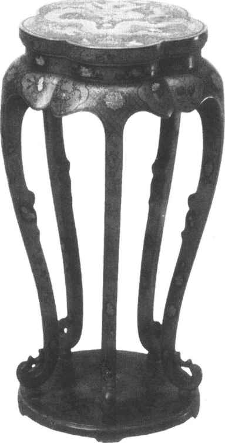
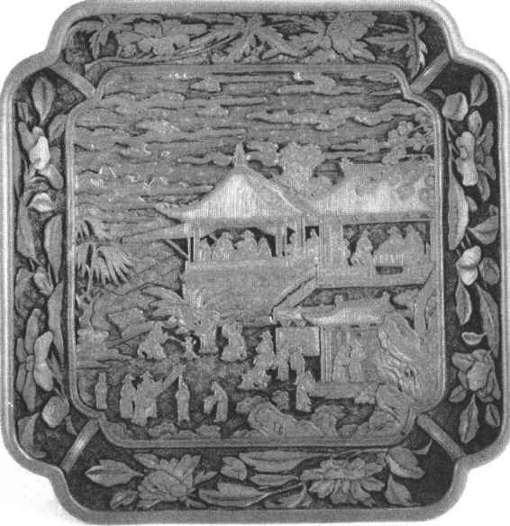
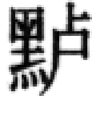
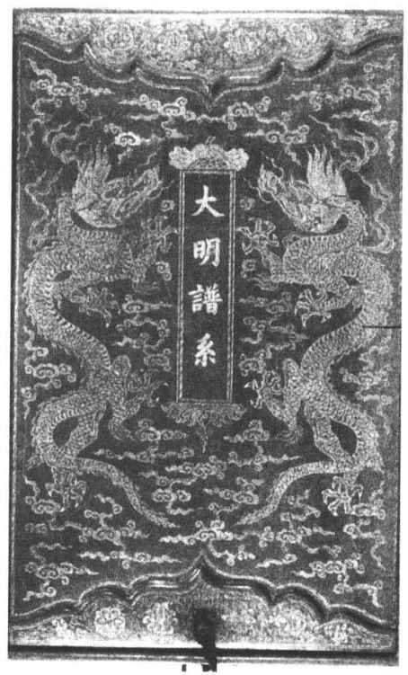

第三节
由盛至衰的明清漆器
纵观我国漆工史，前期的一个重大发展时期是战国，而后期则要数明代。其重大发展也表现在髹饰品种的增多和工艺上的极高成就。杨明在《髹饰录》序中作了很好的概括：“今之工法，以唐为古格，以宋元为通法。又出国朝厂工之始，制者殊多，是为新式。于此千文万华，纷然不可胜识矣”。他明确指出，自明初匠师服役果园厂后，［24］髹饰工艺有了一番重大的革新。这当然和宫廷爱好漆器、发展漆工业有关。而真正的贡献来自哲匠名工，不满足于宋元的通法，力求踵事增华，推陈出新，作了多方面的试验和实践。新的发展也来自借鉴海外漆工的成就。据明张汝弼《杨埙传》记载：“宣德间尝遣人至倭国传泥金画漆之法以归。埙遂习之，而自出己见，以五色金钿并施，不止如旧法，纯用金也。故物色名称，天真烂然，倭人见之亦齚指称叹，以为不可及。”［25］明季海航已便，当时去日本交流漆艺而未见史册记载的肯定还有人在。经过创新和借鉴的努力，终于迎来了漆工艺的千文万华之盛。我们相信有些前所未有的品种，明代始兴；有些虽滥觞于明前，赖技法的改进，至明而更加精美。而两种乃至多种技法的荟萃结合，不同文饰和不同地子的递换迭更，繁衍出不可胜数的变化，更是明代髹漆的一大特色。正因如此，《髹饰录》才开辟了“斒斓”、“复饰”、“纹间”等三个专门门类。
清代制漆业更为繁盛，其制作规模，超过明代。工艺技法也有所发展，尤其是在描金、螺钿、款彩、镶嵌等方面。乾隆号称盛世，百工炫巧争奇，料不厌精，工不厌细，为了迎合宫廷的好尚，漆工也不免趋向繁琐。其成功的作品，谨严细致，似已达到极限，无可逾越，亦足令人惊叹。失败的设计，每嫌雕琢过甚，陷于造作，甚或画蛇添足，弄巧成拙。道、咸以后，我国沦为半封建半殖民地社会，除少数地区，个别工匠，对髹饰工艺有一定的贡献外，漆器制造和其他工艺一样，进入了衰替的时期。
明清漆器的分类，我们自应以《髹饰录》为依据。惟因黄成的分类主要是从形态出发，而没有考虑到流行的情况。传世漆器实物多少很不一致，其所用名称，有的也和现在习惯使用的不同。为了适应传世漆器的实际情况并使其名称容易被人理解，所以不得不做一些适当的调整和变通。为了叙述的方便，明、清两朝漆器实物结合起来讲，不再分代论述。
明清漆器分为以下十四类：
一、一色漆器
一色漆器的传世器物以黑漆为多，朱漆、紫漆次之，黄、绿、褐等色较少。当然细分起来朱漆、紫漆等各有若干种，并有不同名色。
金髹也是一种一色漆器，又名浑金漆，北京匠师称之曰“明金”。其金色外露，上面不再罩漆，故不同于下面将要讲到的“罩金髹”。明金由于金色外露，容易磨残，甚至大部脱落。浙江东阳木雕及福建、广东所制木雕家具及建筑构件，雕琢甚繁，表面多饰金髹。
二、罩漆
罩漆是在色漆或描绘竣工后，上面再罩一层透明漆。这类漆器是在漆工已能利用桐油或其他植物油来调漆，而配制成透明漆后才产生的品种。南宋时罩漆早已流行，《西湖老人繁胜录》中讲到临安有“金漆桌凳行”。一般金漆家具不可能用真金或真银，而只能用锡箔。锡箔上罩漆也能取得近似真金的效果。故知名曰金漆，乃是罩漆。
黄成将罩朱髹、罩黄髹、罩金髹、洒金四种做法列入“罩明门”类。前两种不难理解，即罩了透明漆的朱漆和黄漆。尽管它们不是考究的做法，要做到光滑明澈也并不容易。
罩金髹是用金箔或金粉黏着到打了金胶漆的漆面上，再罩透明漆，北京匠师通称“金箔罩漆”（如用银箔则称“银箔罩漆”）。其优点是金色受到罩漆的保护，不会磨残。但罩漆不能明澈如水而呈微黄，年久还会转深，变成紫下闪金的色泽。它是一种庄严尊贵的做法，帝王宫殿内的宝座屏风（如设置在故宫太和殿、乾清宫各件）、卤簿仪仗皆有罩金髹。清代工部则例则称“扫金罩漆”，指将金粉扫着到金胶漆上，比贴金箔更为考究。佛像装金亦多用此法。
洒金又名“砂金漆”，即在漆地上洒金片或金点，上面再罩透明漆。洒金点或片有大有小，有疏有密，故形态多种多样。有一种细而密的洒金，浑然成片，闪闪发光，北京俗称“金蚵螂地”，言其像一种闪金光的硬甲虫。从实物来看，洒金很少独自存在，一般都用作漆器的地子，上面再施纹饰。《髹饰录》复饰类中的“洒金地诸饰”可以为证。凡是这一类器物，黄成都认为是二饰或多饰重施，列入复饰门。
《髹饰录》描饰门中还有一种“描金罩漆”，也应归入罩漆类。它的做法是在黑、朱、黄等漆地上作描金花纹，花纹上用朱色或黑色勾纹理，最后罩透明漆，北京匠师分别称之曰“金箔罩漆开朱”和“金箔罩漆开墨”。故都旧俗办丧事摆在大门口的大鼓锣架，多用此法作髹饰。
三、描漆
描漆包括描漆、漆画、描油等三种。
战国、西汉彩绘漆器，都可归入描漆类，在当时是很考究的作法。迨至明、清，描漆已不算是名贵品种，在漆器中所占的地位已不及古代那样重要，数量也显得少了。其原因是由于“雕填”漆器的流行。雕填中有许多原本就是描漆漆器，但又加上金细勾来勾轮廓及纹理，使它更加华丽。雕填流行，描漆就显得一般了，在漆器中所占的比重也小了。
四、描金
描金漆器做法是，在漆地上先用金胶漆描绘花纹，趁它尚未完全干透时把金箔或金粉黏着上去。描金还可与描漆相结合，《髹饰录》称之曰“描金加彩漆”，列入斒斓门。
五、堆漆
类似北宋经幢及经函那样的堆漆，明、清实例均罕见，可能因为色彩单纯，不够华美的缘故。故宫藏的云龙纹柜门，花纹凸起甚高，就是用漆灰堆出，复经雕琢，最后泥金罩漆，正是《髹饰录》所谓“隐起描金”的做法。
堆红，又名罩红。其做法是用漆灰堆花纹，雕刻后上朱漆，或用模子在堆起的漆灰上印出花纹，然后上朱漆，都是用以模仿剔红，故又名“假雕红”。论其技法，实为堆漆的一种。
六、填漆
填漆就是在漆器上做出凹下去的花纹，把不同色漆填进去，干后磨平，使它像一幅设色画。观察实物，填漆有多种做法。最常见的一种是沿着彩色花纹轮廓勾阴文线条，花纹上也勾阴文文理，然后填金。由于采用了“戗金细勾”，黄成认为是两饰结合，故列入斒斓门。这种漆器，传世实物甚多，北京文物业通称曰“雕填”。雕填由于实物多，已将它列为一类，下面只讲表面光滑不加金细勾的填漆。（图26—9）

图26-9 康熙款戗金填漆梅花式香几
表面光滑的填漆，《髹饰录》有干色和湿色之别。杨明注更提出有：“磨显填漆， 前设文；镂嵌填漆，
前设文；镂嵌填漆， 后设文”之别。
后设文”之别。
所谓“漆”就是器物接近完成的最后一道漆，此后待做的工作只剩下在上面做纹饰了。“镂嵌雕漆， 后设文”就是说在
后设文”就是说在 漆已经做好之后，刻剔花纹，填色漆，干后略加打磨就完成了。从实物来看，明代早期的雕填漆器（即“戗金细勾填漆”器）多采用此种做法。“磨显填漆，前设文”就是说在糙漆（指
漆已经做好之后，刻剔花纹，填色漆，干后略加打磨就完成了。从实物来看，明代早期的雕填漆器（即“戗金细勾填漆”器）多采用此种做法。“磨显填漆，前设文”就是说在糙漆（指 漆之前的一道工序）完成后设花纹。这个“设”字十分重要，因为花纹不是刻出来的，而是堆出来的。其做法是在糙漆面上用稠漆堆出花纹轮廓，轮廓内填彩漆，轮廓外也填漆，它就是花纹以外的地子。最后通体打磨，它的磨工要比镂嵌填漆多得多。关于填漆的“干色”、“湿色”，我们认为凡是用漆调色做成的填漆都是湿色，干色只能是在器物上阴刻花纹，内填漆或油，再把颜料粉末敷着粘贴上去。有一种填漆是把彩漆填入细而浅的划纹中，多用皮胎，黑漆作地，即杨明注所谓“又一种黑质红细纹者，……其制原出于南方也”。清代贵州大方即以生产此种漆器著名。清田雯《黔书》有关于此类漆器的记载。
漆之前的一道工序）完成后设花纹。这个“设”字十分重要，因为花纹不是刻出来的，而是堆出来的。其做法是在糙漆面上用稠漆堆出花纹轮廓，轮廓内填彩漆，轮廓外也填漆，它就是花纹以外的地子。最后通体打磨，它的磨工要比镂嵌填漆多得多。关于填漆的“干色”、“湿色”，我们认为凡是用漆调色做成的填漆都是湿色，干色只能是在器物上阴刻花纹，内填漆或油，再把颜料粉末敷着粘贴上去。有一种填漆是把彩漆填入细而浅的划纹中，多用皮胎，黑漆作地，即杨明注所谓“又一种黑质红细纹者，……其制原出于南方也”。清代贵州大方即以生产此种漆器著名。清田雯《黔书》有关于此类漆器的记载。
七、雕填
雕填是明、清漆器中的一个大类，数量之多可能仅次于剔红。它用彩色作花纹，阴文金线勾轮廓及纹理，有的还做锦纹地，绚丽华美，乃其特色。观察实物，雕填的花纹有的是刻后用彩漆填成的，有的是用彩漆或彩油描绘成的，也有又填又描，两法兼施的。明代早已存在填与描两种做法，故《髹饰录》分别名之曰“戗金细勾填漆”和“戗金细勾描漆”，并把它们都列入了斒斓门。为了弄清填与描确实可施于一器，1950年还曾请多宝臣匠师示范，做了一件紫鸾鹊纹盒。从事物的发展和“雕填”这个名称来看，并用不同时代的实物来印证，我们感到填漆的做法在前，描绘或填、描兼施的做法在后，它们是在填漆的基础上发展出来的。
名古琴家兼善治漆的管平湖先生1950年为故宫博物院修复一对有宣德款的一封书式龙纹雕填柜，部分漆片脱落卷翘，需要重新用漆黏实，从漆片的断面，可见花纹色漆的厚度，有的厚达1—2毫米，这远远超过了描漆的厚度，可知花纹确实是刻剔后填成的。
清代的雕填凡是用锦纹作地的，一般都填、描兼施，即用填漆做锦地，描漆绘花纹。其做法是通体先用填漆做好锦地，以后在锦地上描花纹。描绘时信手画去，锦纹压多压少完全不用考虑，因为反正描绘花卉可以将锦地盖住。这样做比刻填锦地时要为花纹留出空位，描绘时又必须小心地去填满那些空位要省事爽手得多。不过描绘的花纹毕竟厚度有限，就近细看，花纹下的锦地完全可以看出来。我们正是从这里知道，雕填是先通体做好填漆的锦地，再在上面描绘花纹。
清代雕填也有全部是用描绘画成的。到了晚清时期，更有连锦纹也是画成的，工艺简陋粗滥，不过徒有雕填之名而已。
八、螺钿
明、清嵌螺钿漆器既有厚螺钿，也有薄螺钿。
明代螺钿器有年款的绝少。英国维多利亚、爱尔伯特美术馆藏有“嘉靖丁酉年”（1537）款的人物楼阁圆盒及日本东京国立博物馆藏有龙纹朱漆盘，底刻“大明隆庆年御用监造”款。不过这两件不论是嵌工还是划理都比较粗糙，不足以代表明代的上等制品。黄成认为螺钿器“总以精细密致如画为妙”。
大约自明中叶开始流行的螺钿加金银片器到清初发展到高峰，钿片剥离更薄，裁切更小，拼合更巧，镶嵌更精，刻画更细。名家如江千里、吴伯祥、吴岳桢等都是这时期的巨匠，而以江千里声誉最高。薄螺钿有的不加金银片而与描金结合。描金可以做大面积的渲染，浓淡成晕，和加金银片的效果是不同的。
上述各种螺钿器的钿片和漆面是平整的。倘取材厚贝壳，施加雕刻，嵌入漆器，花纹高出漆面，成为浮雕或高浮雕，那就是黄成所谓的“镌甸”了。不过镌甸只限于以螺钿花纹为主的漆器，如采用多种物料雕成嵌件，镶入漆器，那就成为“百宝嵌”了。清中期以后扬州名漆工卢映之、卢葵生祖孙都是镌甸能手。
九、犀皮
明、清两代犀皮漆器为数均不少，从质量来看，以明代的为佳，有的色漆层次多，花纹天然宛转，有如行云流水，十分美观。故宫博物院藏有犀皮葵瓣式盒，大约为乾隆时期的作品，以深浅黄色相间成文，用色不多而层次不少，尚具明代的法度。
清代晚期南方漆工常把犀皮用到红木家具上，如琴桌的桌面及腿足中部的开光部分。北京则用犀皮来装饰烟袋杆。犀皮作为一种漆器出现反不多见，这样只能使它的技法和质量日愈下降。
据《髹饰录》，犀皮还可与戗金或款彩结合，名曰“戗金间犀皮”和“款彩间犀皮”，实例尚待访求。可供参考的一件漆器是瘿木漆戗金笔筒。癭木漆是用髹刷蘸不同色漆旋转刷成的，但可以使我们看到犀皮与戗金相结合的效果。
十、剔红
剔红包括剔黄、剔绿、剔黑及剔彩等几种雕漆。它们只有色彩的不同，刀工刻法、花纹题材则并无二致，故不妨合成一类。
雕漆自元末达到了历史的顶峰，明初乃其延续。名工张成、杨茂大约入明以后才逝世，史籍还记载明成祖朱棣召张成之子德刚面试称旨，授营缮所副。当时他服役的官家作坊是在棂星门西的果园厂。故永乐时造的剔红，绝似元末西塘的制品，就连款识也仍用针划，字体并不工整而有民间意趣。使人赞叹的是两层花叶重叠的茶花纹剔红盘，章法井然，繁而不紊，意匠经营，可谓千锤百炼。属于近景山水一类的作品，必须留出空隙用不同锦纹来表现天、地、水。有一镌刻至精的赏花图剔红盒，针划“张敏德造”款，技艺比拟张成，有过之而无不及，其时代也不能晚于永乐，当是西塘又一高手。（彩图18）
宣德雕漆应与永乐划入同一时期，有的作品相似到难于分辨。这一方面是由于部分永乐制品被改为宣德年制，针划原款遭到磨刮涂盖，另加填金的刀刻宣德款。这种令人费解的现象不仅明人早有记载，从实物上也得到证实，所见故宫藏品，永乐改为宣德的就有十二三件之多。不过器底为原髹，全无改款痕迹，可信宣德款并非后刻的也不少，其风格还是和永乐十分相似。永、宣之间，中间只隔洪熙一年，工匠连续服役，故两朝制品，有的原即出于一手，其风格安得不似！
如说永、宣雕漆完全相同，也不符合事实，从某些作品中我们能看到宣德开始形成自己的风貌。其变化主要在用漆由厚而渐薄，花纹由密而渐疏。漆薄就不能雕得像明初那样肥厚圆润，花疏则不得不用锦纹来填补空隙。
宣德以后，从正统到正德（1436—1521）计六朝，几乎看不到刻有年款的雕漆器。流往海外的有“弘治二年平凉王铭刁”款识的滕王阁剔红盘要算绝无仅有的一件。难道这八十几年间宫廷就没有制造或置办雕漆器？这当然是讲不通的。但迄今似乎还没有找到令人信服的答案。故宫博物院是收藏明代雕漆的渊薮，无款而时代风格似在宣德、嘉靖之间的作品不下二百件。此外在风格上距宣德远而距嘉靖近的雕漆为数更多。我们不满足于把一大批无款的明代雕漆笼统地定为明中期。但细致地分辨时代差异，进而作出比较准确的断代，需要经过努力的探索才能取得成果。
嘉靖雕漆多刻年款，风格也有明显的特点。刀法不复藏锋，不重磨工而渐见棱角。器形出现变化，八方香斗、银锭式盘、盒等为永、宣时所未见。剔彩器增多。吉祥文字及图案广泛用作题材，往往用松、竹枝干盘曲成“寿”、“福”等字。道教色彩浓厚，鹤、鹿、灵芝等形象明显增多。有如一幅风俗画的货郎图剔彩盘是这时期的精品，把一位老货郎和八个儿童及器物众多的担子收摄到径尺盘中，视苏汉臣的画本竟不多让。
雕漆到万历而再变，从物象到锦纹，似乎都向细小处收缩，刀法愈加繁密，作风更为谨严，予人一种拘局抑敛的感觉。刀刻填金款字体修长并加干支纪年也是过去很少有的。
明代雕漆中有的还富于民间气息。这类制品构图粗犷，刀法快利，一剔而就，棱角尽在。这类雕漆，从未发现款识，故时代、产地，无从确断。近年中、西学者每据《野获编》、《帝京景物略》、《燕闲清赏篇》等书言及云南剔红“漆光暗而刻文拙”，“雕法虽细，用漆不坚，刀不藏锋，棱不磨熟”，将这类雕漆定为云南制。文献与实物，确有吻合处。但终嫌证据不够充分，即无有力的确证，也缺少旁证。故宫藏品中有一件文会图剔红委角方盘，上有“滇南王松造”款识，但刀法属于圆润一路，风格距宣德近而距嘉靖远，看来关于云南雕漆有必要进行实地调查采访，现在还不宜过早地作出肯定或否定的结论。（图26—10）

图26-10 明中期“滇南王松造”文会图委角方形剔红盘
清代雕漆至乾隆而大盛，器物品种增多，除盘、碗、盒、匣外，还用以制造小型建筑、车辇、舟船，以至巨大的宝座屏风、桌案床几等。雕漆和其他工艺品种结合，是乾隆时期的又一特点。鎏金铜饰，用得最多，其他如画珐琅、嵌珐琅、镌玉、雕牙等也常与雕漆在同一器物上出现。
乾隆时的刀工锋棱毕露，更加追求精细纤巧的效果。故研磨已无地可施，似乎只有繁琐堆砌，才能得到弘历的嘉奖。这时期也有难能可贵的作品。如剔彩百子晬盘精工绚丽，在乾隆剔彩中允推第一。绦纹剔黑大碗，简练而有气势，一扫乾隆时的繁缛堆砌之弊，值得称赞。秋虫桐叶形剔红盒利用天然树叶的筋脉，代替人工设计的锦纹，构思新颖，颇为巧妙，也是乾隆时期不可多得的佳制。
十一、剔犀
剔犀也是雕漆的一种，由于它的花纹离不开几何图案，色彩于刀口内见层次，故与其他雕漆不同，宜自成一类。
剔犀和剔红一样，也是在元末明初达到了历史高峰。由明历清，直至近代，这一工艺，并未中断。从表面漆色来看，不外乎黑、紫、朱三色。黑、紫两色面的刀口内多见朱线，朱色面的刀口内多见黑线。漆层内兼露黄色或绿色线的较少见。《髹饰录》还提到有“雕等复”、“三色更叠”诸称。前者指黑、朱两色漆层同厚，依次重复；后者指黑、朱、黄三色轮番出现。至于图案虽有剑环、绦环、重圈、回文、云勾等名色，实以云纹及其变体为主，故北京文物行业通称剔犀曰“云雕”。
剔犀不像其他雕漆那样可以山水、人物、花卉、鸟兽作花纹，故不容易从其题材、刀法、锦纹等看它的时代风格，这就为判断其年代增添了困难。又因剔犀在日本也是一个传统品种，名曰“屈轮”，有的制品还传到中国来，故鉴定时还有一个分辨产地问题。中日漆工关系之密切亦于此可见。
十二、款彩
款彩的作法是在木板上用漆灰做地子，上黑漆或其他色漆，用近似白描的方法在漆面上勾花纹，保留花纹轮廓而将轮廓内的漆灰都剔去，使花纹低陷。然后用各种色漆或色油填入轮廓，成为彩色图画。由于花纹轮廓高起，看上去很像印线装书的木板。北京匠师因剔刻铲去的部分是漆灰，故名之曰“刻灰”。文物业则称之曰“大雕填”，以别于有戗金细钩的一般雕填。这两个名称都不及款彩来得明了准确。款彩在西方国家有专称，叫“Coromandel”。Coromandel是印度东南一带的海岸名称，可能明清之际的外销款彩漆器运到这一带上岸转口，因而得名。它和漆器的制作形态更是毫无干系了。
款彩在明代已流行，曾见晚明小插屏的屏心，用款彩做出山水人物。到了清前期用款彩作大围屏之风渐盛，传世的八叠、十二叠的款彩围屏多数是康熙时期的制品。款彩花纹比较粗，可以装饰大面积的空间，宜于远观，用在围屏上是非常适宜的。
十三、戗金
戗金漆器，源远流长，自明历清，又有不少变化。
明初戗金器，近年的重要发现是在山东邹县朱檀墓中出土的龙纹朱漆戗金盝顶箱和云龙纹朱漆戗金玉圭盒，均用朱漆作地，划戗云龙纹，金彩灿烂，图案生动，尤以盝顶箱为佳。
在江苏江阴出土的莲瓣式紫漆盒，盖面戗划庭园景色，中设方桌，仕女三人，分立桌后及左右。阑外树木扶疏，前景以花草为点缀。盖面外周为缠莲纹。据考证当为永乐三年（1405）制品。
据日本释周凤《善邻国宝记》卷下记载，宣德八年（1433）明廷颁赐日本的礼品中有：朱红漆彩妆戗金轿1乘，朱红漆戗金交椅1对，朱红漆戗金交床2把，朱红漆戗金宝相花折叠面盆架2座，朱红漆戗金碗20个，橐金黑漆戗金碗20个。戗金日本名曰“沉金”。元代的戗金漆器多藏彼土，说明日本对戗金的爱好和重视。明初戗金器的东传，对日本和琉球有重大影响，戗金逐渐发展成为他们的主要髹饰品种。
1955年前后，故宫博物院在北京购得朱地龙纹戗金箱，盖面在长方形的签条内用细密的纲目纹戗划出楷书“皇明祖训”四字。两侧划云龙，右升左降，丰颅锐喙，长鬣起立，从双龙的形象看是宣德时期的制品，其技法和图案是和盝顶箱一脉相承的。
宣德到嘉靖一段期间，戗金实物绝少。故宫收藏至富，亦未见到可确信为这一时期的制品。（图26—11）

图26-11 明朱漆戗金云龙纹谱系匣
宣德以后戗金器之所以数量稀少，当与雕填漆器的盛行有关。雕填是在用彩漆填嵌或描绘的花纹上加戗金轮廓和纹理，自然比只有划纹填金而没有彩色花纹的戗金来得华美绚丽。这两个品种的消长正好是在同一时期，似能为上述的看法提供一些佐证。
自晚明到清末，戗金漆器约可分为三种。一种是民间制品，多以人物、山水、花鸟为装饰题材，花纹内密布刷丝，尚保留传统技法。锦纹惯用正方上重叠斜方，细密而不甚工整。器物以盘、盒为多，有一定的实用价值，不能算是贵重的观赏漆器。第二种是清代宫廷制品，技法已脱离传统的戗金而自具一格。由于它只勾轮廓而无划纹，故或称之曰“清勾”。我们认为它并非出自戗金匠人之手而是雕填漆工的制品。因为其技法和雕填器上的勾金全同，只不过免去彩色花纹，在一色漆地勾轮廓而已。第三种用刀刻来追求书画笔墨效果，刀痕有粗有细，或深或浅，它实际上是受清代竹刻的影响，而和漆工的戗金关系并不密切。因在刀痕中填金，只能名之曰戗金。
十四、百宝嵌
百宝嵌是用各种珍贵材料如珊瑚、玛瑙、琥珀、玳瑁、螺钿、象牙、犀角、玉石等做成嵌件，镶成绚丽华美的浮雕画面，珠光宝气，相映成辉，是其他装饰方法所不能达到的，黄成把它列入斒斓门。
百宝嵌在明代开始流行，约至清初而达到高峰，其生产中心在扬州，明末著名艺人周贵就是扬州人。嵌件既可镶在漆器上，也可镶在紫檀、花梨等硬木制的器物上。二者的选料、雕镌与嵌法相同，故可能一人而兼制漆、木两种不同的百宝嵌。
上列十四类，只能说明、清两代的常见漆器大体具备，但比起《髹饰录》讲到的大量品种则相差很多。尤其是表面有不平细纹的纹及填嵌门中的绮纹填漆、彰髹等，竟未能找到实物。至于斒斓、复饰、纹间三门中的诸般名色，未曾见过的就更多了。不过既经《髹饰录》列举了名称，即使找不到实物，今后也有可能按照书中描述的方法和形态去探索试验，进而恢复过去的品种。因此黄成、杨明之功是不可没的。
中国的漆工史久远绵长，传世和出土的古代漆器分布全国，难以数计。它们虽只是我国古代千文万华漆器中的一少部分，但足以从中窥见我国古代漆工艺术的辉煌成就。我们有这样伟大的漆工艺传统，相信髹饰工艺的真正千文万华不是过去而是明天。